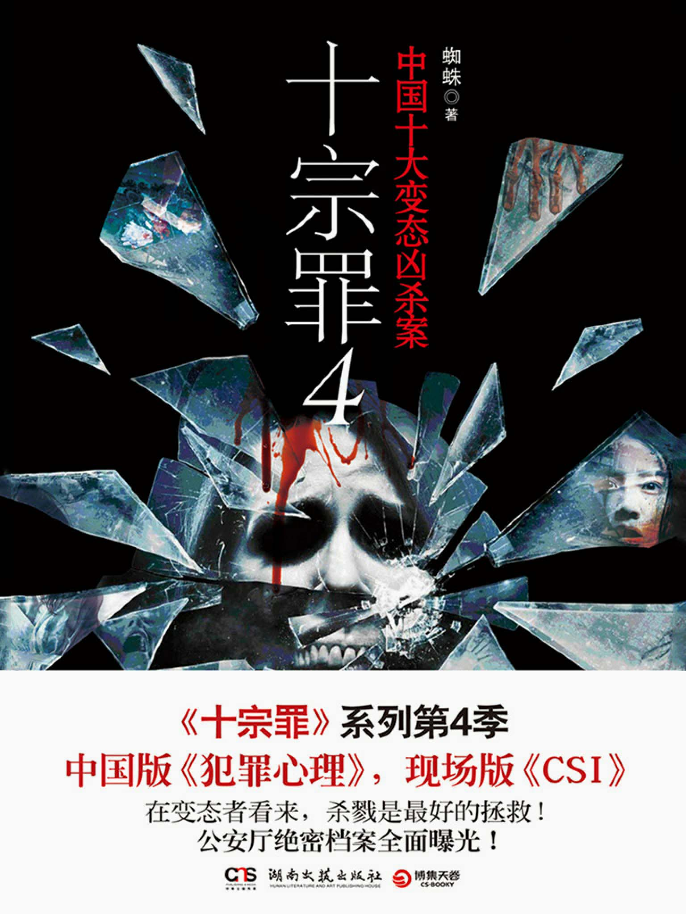
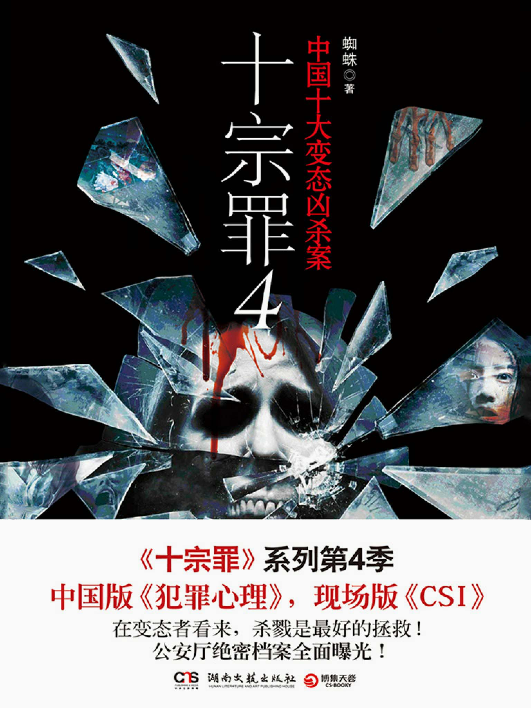

Lim En Dhong, also known as LED, is a Computer Science student at Universiti Teknologi Malaysia. She is from Kedah and is majoring in Computer Networks and Security. She is passionate about networking, cybersecurity and web development. Recently, she started learning web design to improve her frontend skills. Besides tech, she also enjoys listening to music and reading novel in her free time.
Ng Jin En, can called as Cheryl, is a second-year Computer Science student at Universiti Teknologi Malaysia, specializing in Network and Security. She is from Kulai, Johor. She has a strong interest in cybersecurity, system hardening, and network analysis. She is a person who enjoy learning new things and taking on challenges.
Yeo Wern Min has a deep interest in software engineering and mobile app development. He's always testing new frameworks and loves building innovative applications using Flutter and Firebase.
Our Common Interests
Food
Books
 

Movies